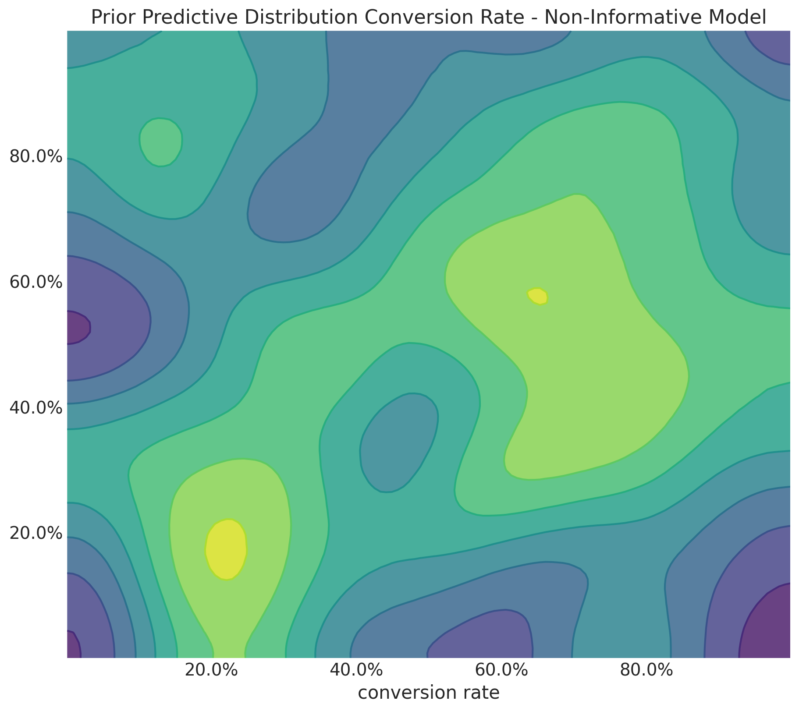
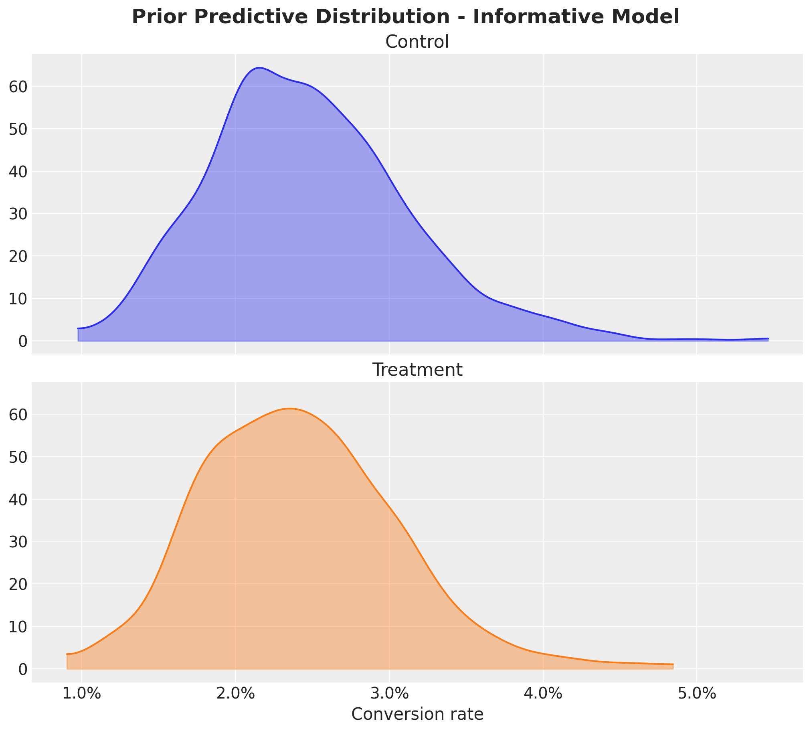
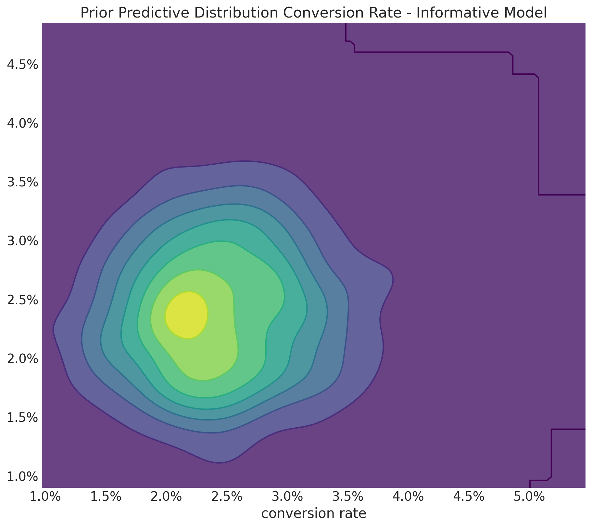
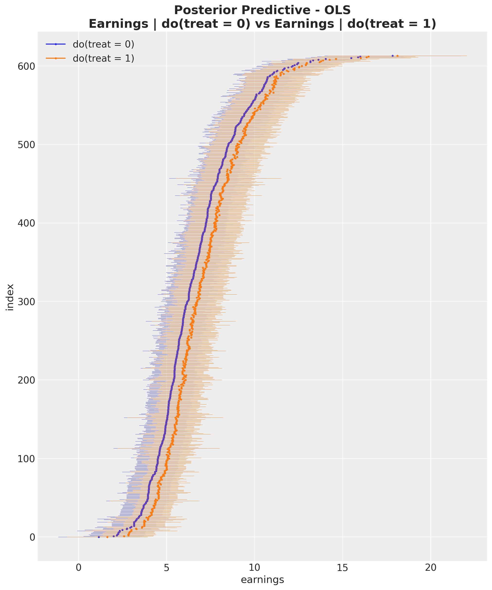
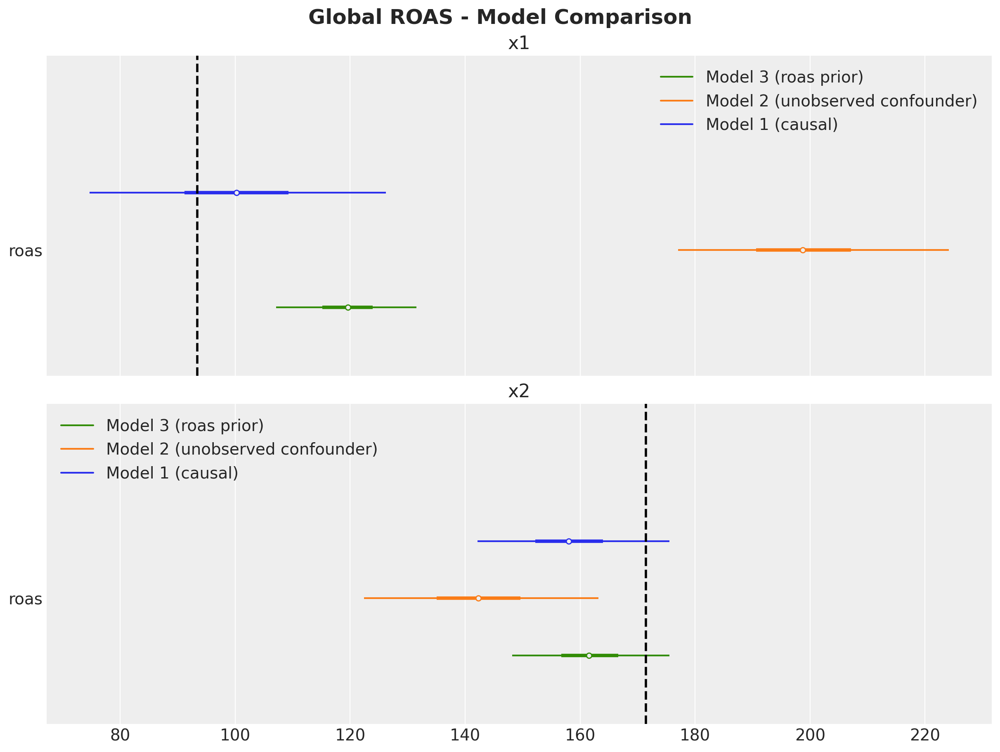
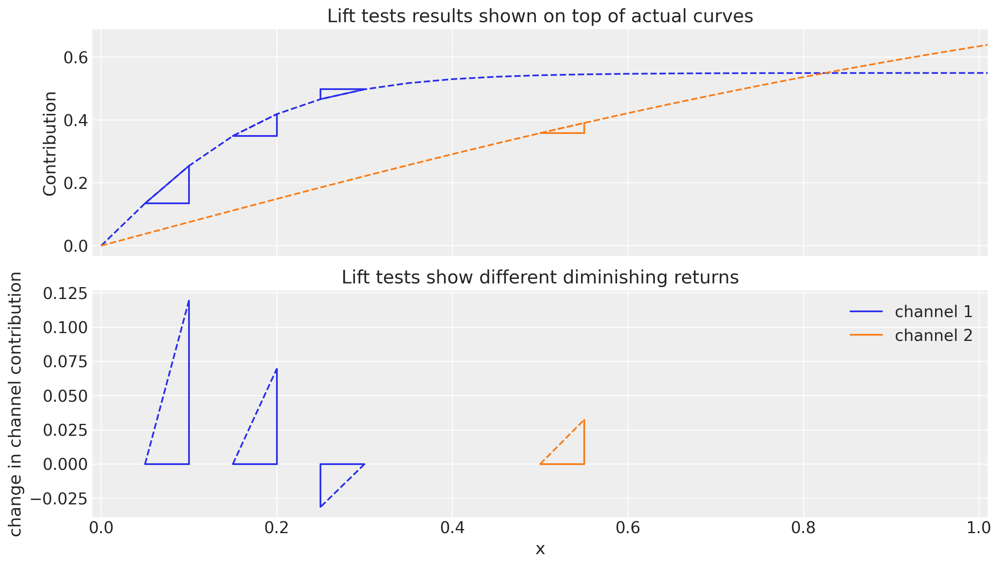
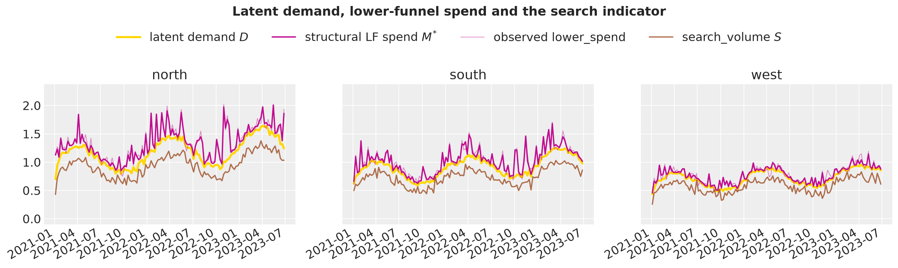
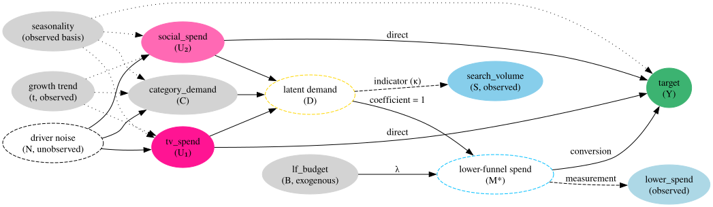
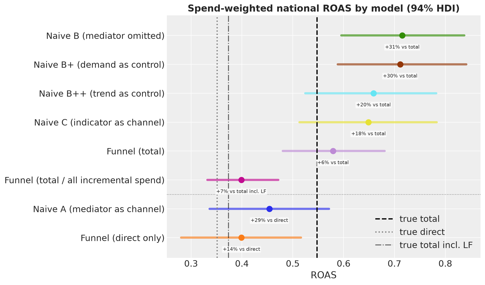

Prior\(p(\theta)\): domain knowledge before we see the data.
Likelihood\(p(y \mid \theta)\): how probable the data is for given parameters.
Posterior\(p(\theta \mid y)\): updated beliefs after we see the data.
From Generative Model to Inference
A probabilistic program describes how the data is generated. Before we observe data, every variable has a prior distribution. When we condition on observed data, the same program defines the likelihood. If we read its arrows as causal, the same program is both the causal model and the Bayesian model.
Probabilistic Programming Languages (PPLs)
PPLs let us write generative models as code and run posterior inference automatically. Examples: PyMC, NumPyro, Stan.
Why PPLs for Causal Inference?
In industry, we estimate causal effects from limited data and under assumptions we cannot fully test. PPLs help in the following ways:
The model is the DAG: we write the data-generating process as code, so every causal assumption is explicit.
Priors: domain knowledge and past experiments enter the estimate (A/B testing, ROAS calibration).
Uncertainty: we get a posterior distribution for every causal quantity.
The do operator: we apply interventions to the model and compute counterfactuals (pm.do in PyMC, numpyro.handlers.do in NumPyro).
Flexible structure: non-linear likelihoods, latent variables, measurement models, and shared and geo-specific parameters. The do operator still applies.
This does not mean that Bayesian methods are better than frequentist methods. Every framework has assumptions and limitations.
PPLs do not solve identification. They help with estimation once we state the causal assumptions.
Bayesian A/B Testing
In an A/B test, we randomly assign users to a control group and a treatment group. Random assignment makes the treatment independent of all confounders, observed and unobserved. The hard part moves from identification to estimation under uncertainty. We observe \(N_\text{c}\) and \(N_\text{t}\) conversions out of \(N\) users per group.
Uninformative priors give implausible values for the relative lift.
The relative lift is a ratio of two random variables. With flat priors on the two conversion rates, the prior allows a treatment that is \(100\) times better than control.

Informative Priors


Informative priors on each rate are not enough.
With \(\text{cr}_\text{c}, \text{cr}_\text{t} \sim \text{Beta}(15, 600)\), both conversion rates are close to \(2.4\%\). Still, the prior allows lifts of \(50\%\), which are rare in practice.
Correlated Priors
We know that most true lifts are small. So we set the prior on the relative lift itself.
We observe \(200\) and \(350\) conversions out of \(10{,}000\) users per group (a naive lift of \(75\%\)). The posterior shrinks both conversion rates toward the prior, so the lift estimate is more conservative.
We use the LaLonde data from a job training program (National Supported Work Demonstration, 1970s). We ask whether job training increases earnings.
Treatment: participation in the job training program (treat).
Outcome: earnings in 1978 (re78, in thousands of USD).
Covariates: education, age, earnings in 1975 (re75), race and ethnicity, marital status, degree.
Naive comparison: the treated group earned \(635\) USD less than the comparison group. But the comparison group comes from an observational survey, so treatment was not randomly assigned.
We assume that the covariates block every backdoor path (the backdoor criterion).
ATE Estimation Strategies
We have two ways to estimate the ATE:
We fit a linear regression and read the estimate of \(\beta_{\text{treat}}\) as the ATE:
\(\text{P}(Y \mid \text{do}(T = t))\) is the distribution of \(Y\) when we set\(T = t\) for every unit. In the graph, it cuts all arrows into \(T\), as in a randomized experiment.
PyMC Model: Treatment Sub-model
The first part of the model encodes the arrows from the covariates to treat.
In the linear model, the posterior of beta_treat_earnings is the ATE: mean \(0.55\) (about \(550\) USD) with \(94\%\) highest density interval (HDI) \([-0.55, 1.7]\).
The vertical lines show the naive difference and the OLS and matching estimates from an external analysis. That analysis also adjusts for 1974 earnings (re74), which our model leaves out.
The do Operator
We set treat to \(0\) and to \(1\) for every unit. The arrows from the covariates into treat disappear from the graph.
In NumPyro, the numpyro.handlers.do effect handler does the same.
Counterfactual Predictions

For each unit, we predict earnings under \(\text{do}(\text{treat} = 0)\) and \(\text{do}(\text{treat} = 1)\). The ATE is the average of the differences.
In the linear model, the do operator and the regression coefficient give the same ATE, which is good!
A Gamma GLM
Earnings are non-negative and right-skewed.
We change two lines: a softplus link keeps the mean positive, and pm.Gamma replaces pm.Normal.
With a non-linear link, the coefficient is not the ATE.
The do operator still gives the ATE on the original scale: mean \(0.58\) with \(94\%\) HDI \([-0.1, 1.2]\).
The same do code works for non-linear links and for individual counterfactuals.
Marketing Mix Models
How should we split next quarter’s marketing budget across channels (TV, radio, search, and so on) to maximize sales?
We need the causal effect of each channel \(m\) on sales \(y\). A marketing mix model (MMM) splits sales into a baseline, seasonality, and channel contributions.
A common summary is the return on ad spend (ROAS):
Limited data: typically \(2\) to \(3\) years of weekly data.
Media spend series are often highly correlated.
Unobserved confounders (for example, competitor activity).
Bayesian MMMs
Uncertainty quantification.
Domain knowledge through priors.
Calibration with experiments (lift tests).
Time-varying parameters with regularization (strong priors or hierarchies).
Budget optimization that accounts for uncertainty.
Unobserved Confounders
We simulate \(2.5\) years of weekly data with two channels, x1 and x2, and sales y.
z is a confounder: it drives the spend on x1 and the sales y.
The models include trend and seasonality. If we leave out z, the backdoor path through z stays open.
Model 1 includes z. Model 2 leaves z out, as if we could not observe it.
We know the true ROAS of each channel because we simulate the data.
This is the job training example again, but now we cannot adjust for the confounder.
Biased ROAS
A model without z estimates a ROAS of \(198\) for x1 against a true value of \(93\), and \(142\) for x2 against a true value of \(171\). It ranks x1 above x2. The truth is the opposite.
How can we correct this? We bring experimental results into the model, in one of two ways: priors on the ROAS (Zhang et al., 2024) or an additional likelihood for lift tests, which are experiments on one channel (PyMC-Marketing).
ROAS Re-parametrization
This is the same idea as the correlated priors in the A/B test: we put the prior on the quantity we know something about.
We write each media coefficient as a function of the channel’s ROAS:
where \(f\) is the media transformation (adstock and saturation) and \(\tilde{x}_{m}\) is the spend with channel \(m\) turned off.
Now we can put a prior on the ROAS of each channel, for example from a past experiment. In the simulation, we center the priors at \(95\) and \(170\), close to the truth (shown below on the scaled data).
ROAS Priors: Model Comparison

Model 3 has ROAS priors and still leaves out z. It moves the ROAS of x1 from about \(200\) to about \(120\). The bias shrinks, but it does not go away. The posterior balances the prior and the evidence from the data.
Lift Test Calibration
A lift test is an A/B test on one channel. We change the spend in some regions or time periods and measure the change in sales.

Each test measures how much the saturation curve rises from \(x\) to \(x + \Delta x\).
The model predicts this lift from the curve. The measured lift enters as an additional likelihood.
The saturation parameters must explain the sales and the experiments.
Each new test adds one more observation.
Lift Test Calibration: Results
With lift tests and still without z, the ROAS of x1 moves from \(198\) to \(109\) (\(94\%\) HDI \([98, 121]\), true value \(93\)). For x2, we get \(161\) (\(94\%\) HDI \([143, 179]\), true value \(171\)). The bias on x1 drops from \(+112\%\) to \(+17\%\), and the ranking of the two channels is now correct.
Funnel Models in Marketing
So far, the bias came from a variable we left out. Now it can come from one we put in. We use the PyMC-Marketing MMM case study: \(209\) weeks of synthetic sales data.
Lower funnel channels capture existing demand, for example paid search (sem_spend).
Paid search is \(26.9\%\) of media spend. Should it be one more channel?
Paid search spend and impressions (how often the ads show) both correlate with sales (\(0.59\)).
Two stories fit the data: paid search drives sales, or paid search harvests demand that the upper funnel created. Correlation cannot separate them.
The Funnel DAG
TV, Radio, and Newspaper act on sales directly and through latent demand\(D\).
The paid search budget \(B\) adds to \(D\). The sum is the mediator\(M^*\): the demand that paid search reaches. Here \(B\) is exogenous.
Search impressions measure \(M^*\). They do not cause sales. Dashed nodes are latent.
In practice, paid search spend also follows demand. Then a model with paid search as one more channel conditions on the mediator and credits paid search with sales that the upper funnel created. Chan and Perry (2017): “Downstream ads should not be included with exogenously-determined ads in a single regression equation.”
Funnel Model Structure
Let \(U_{t,c}\) be the spend of upper funnel channel \(c\) in week \(t\), \(B_t\) the paid search spend, and \(I_t\) the search impressions:
Sales get the extra term \(\text{sat}^{lf}\left(\text{adstock}^{lf}(M^{*}_t)\right)\). The parameter \(\lambda\) converts paid search spend into search demand, and \(s_{B}\), \(s_{I}\) are the maxima of the two series.
A Structural Equation Model
This is a structural equation model with a latent variable. The impressions equation is the measurement model. We fix its loading at one (on \(I_t / s_I\)) to set the scale of \(M^*\).
Direct and Mediated Contributions
We compute the mediated part with the do operator: we set the spend of one upper funnel channel to zero and push the change through \(D\) and \(M^*\) to sales.
The mediated share of each channel’s total effect is about \(6\%\) (Newspaper), \(12\%\) (TV), and \(25\%\) (Radio). The lower ends of the \(94\%\) HDIs reach zero.
Why so small? About \(41\%\) of the mediator comes from the baseline and \(49\%\) from paid search’s own spend. Only about \(10\%\) comes from upper funnel media.
Structure and Experiments Together
We compare the ROAS (mean and \(94\%\) HDI) of two models. Part I is the MMM from the first part of the case study, without paid search, funnel, or calibration. Part II is the funnel model plus two hypothetical experiments.
Role
Channel
Part I
Part II
Calibrated
Online Display
\(56.4 \; [0.8, 118.8]\)
\(27.9 \; [21.1, 35.1]\)
Calibrated
Direct Mail
\(7.3 \; [0.0, 19.5]\)
\(4.7 \; [2.0, 7.3]\)
Upper funnel
TV
\(43.6 \; [0.7, 86.0]\)
\(45.7 \; [3.6, 92.8]\)
Upper funnel
Radio
\(32.1 \; [0.0, 84.7]\)
\(35.7 \; [1.8, 85.2]\)
Upper funnel
Newspaper
\(14.4 \; [0.2, 30.1]\)
\(14.9 \; [0.4, 32.0]\)
Control
Insert
\(55.9 \; [0.1, 125.9]\)
\(57.6 \; [0.4, 141.6]\)
Control
Social Media
\(30.7 \; [0.2, 74.0]\)
\(26.8 \; [0.1, 67.4]\)
The experiments shrink the Online Display interval to \(12\%\) of its former width. The upper funnel channels now report the total effect. The control channels barely move.
Match the calibration target to the estimand of the experiment. The calibration constrains the direct effect, which is valid because the calibrated channels have no funnel path.
Causal Identification in Funnel Models
The case study has no ground truth. So we simulate a funnel from the funnel model itself, with the true parameters fixed via pm.do. Now paid search spend responds to demand.
\(3\) geos (regions), \(130\) weeks, and two upper funnel channels.
Mediator: paid search spend lower_spend measures the latent \(M^*\). Only its budget is exogenous.
Indicator: branded search search_volume measures latent demand \(D\). It does not cause sales.
Confounding: media plans and category demand share seasonality, trend, and noise.

The Causal DAG

Mediator or indicator? We ask: “if we doubled this variable, would sales move?” Lower funnel spend: yes, so it is a mediator. Branded search: no, so it is an indicator.
Exclusion restrictions: the budget \(B\) enters \(M^*\) but not \(S\). This identifies \(\lambda\). Category demand \(C\) enters \(D\) but not \(Y\).
The driver noise \(N\) is unobserved. It confounds tv_spend, social_spend, and category demand.
Which Models Identify What?
We use the DAG to check which conditioning sets satisfy the backdoor criterion for the total effect of tv_spend (\(U_1\)) on sales. There are \(43\) backdoor paths from \(U_1\) to \(Y\).
Model
Conditions on
Valid for the total effect?
A: mediator as channel
\(M\), \(U_2\), season
No: \(M\) is a descendant of \(U_1\)
B: mediator omitted
\(U_2\), season
No: \(4\) backdoor paths stay open
B+: demand as control
\(C\), \(U_2\), season
Yes: all backdoor paths blocked
B++: trend as control
\(t\), \(U_2\), season
No: \(1\) backdoor path stays open
C: indicator as channel
\(S\), \(U_2\), season
No: \(S\) is a descendant of \(U_1\)
Funnel model
models \(D\), \(M^*\), \(S\)
Relies on the structural equations
B++ leaves the path \(U_1 \leftarrow N \to C \to D \to M^* \to Y\) open because the noise \(N\) is unobserved. We run these checks with networkx on the same edge list that draws the DAG.
Testable and Untestable Assumptions
Untestable
The funnel model is correct only if the demand equation is right and nothing unobserved confounds \(M^* \to Y\). Neither the backdoor checks nor the posterior predictive checks can reveal a violation.
Testable
The DAG implies that the budget \(B\) and branded search \(S\) are independent (\(B \perp S\)), but not given \(Y\) or \(M\). In the data, the correlations per geo are \(-0.070\), \(+0.046\), and \(-0.101\), against a standard error of about \(0.09\). The data does not contradict the DAG.
A Fair Comparison
Here, the funnel model is the true data-generating process. It also sees two more series than the naive models. The gain comes from structure and information together.
ROAS by Model

Against the true total ROAS, the four naive models that target the total effect overstate the national ROAS by \(18\%\) to \(31\%\). The funnel model is \(6\%\) above the truth. Even the valid adjustment set (B+) overstates it by \(30\%\).
Fit Does Not Rank Causal Models
The in-sample \(R^2\) of the six models ranges from \(0.979\) to \(0.987\). Their ROAS estimates differ by tens of percent.
Why does the valid adjustment set (B+) still fail? It overstates the ROAS of social_spend by \(100\%\) in south and \(40\%\) in west. In south, every model overstates social_spend, the funnel model included (\(+27\%\)).
Category demand enters B+ as a linear control, while the media effects are flexible curves. The media curves absorb part of the demand effect. On tv_spend, the invalid set B++ (\(4.4\%\) mean error) beats the valid set B+ (\(15.3\%\)).
A valid adjustment set says which variables you need, not how they enter the model or which structure is missing.
The model states the assumptions. We write the DAG as code: job training, MMM, and funnel models.
Priors carry outside information. Domain knowledge rules out implausible lifts in A/B tests. Experiments reduce, but do not remove, confounding bias in MMMs.
The same do query works across models. It applies to a linear regression, a Gamma GLM, and a funnel model with latent demand.
Latent variables and measurements are part of the model. The funnel models treat search impressions and branded search as measurements of latent variables, not as causes.
Identification comes first. The DAG tells us what we can estimate and which assumptions we need. A good in-sample fit does not replace them.
PyMC-Marketing
Bayesian marketing toolbox in PyMC. Media Mix (MMM), customer lifetime value (CLV), buy-till-you-die (BTYD) models and more.